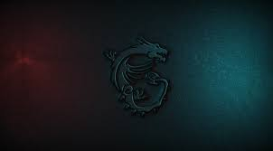

.png)


NurdTech, elektronik ve bilgisayar dünyasındaki güçlü ve güvenilir bir isimdir. 20XX yılında kurulduğumuz günden beri, müşterilerimize en kaliteli ürünleri ve hizmetleri sunmaya odaklanarak, sektörde kendimize sağlam bir yer edindik.
Vizyonumuz: Teknoloji ve bilgisayar dünyasındaki yenilikleri takip ederek, müşterilerimize her zaman en güncel ve ileri teknoloji ürünlerini sunmaktır. Misyonumuz: Müşteri memnuniyetini sağlamak ve teknolojiyle yaşam kalitesini artırmak için ihtiyacınız olan ürünleri sorunsuz bir şekilde sizlere ulaştırmaktır.
NurdTech, geniş bir ürün yelpazesi sunan bir elektronik ticaret platformudur. Bilgisayarlar, laptoplar, bileşenler, aksesuarlar, oyun ürünleri ve daha fazlasını içeren geniş bir ürün yelpazesiyle, müşterilerimize çeşitlilik ve kalite sunuyoruz. Ürün seçimlerimizi, performans, güvenilirlik ve kullanıcı memnuniyeti açısından titizlikle yapıyoruz.
NurdTech, müşteri memnuniyetini her şeyin üzerinde tutan bir anlayışla hareket eder. Profesyonel müşteri hizmetleri ekibimiz, size en uygun ürünü bulmanız konusunda size rehberlik etmekten ve herhangi bir sorunu çözmekten memnuniyet duyar. Bizim için her müşteri bir ortaktır ve onların ihtiyaçlarına hızlı ve etkili çözümler sunmak, temel prensiplerimizden biridir.
NurdTech, güvenli online alışveriş deneyimi sunmak için en son güvenlik standartlarını benimser. Güvenli ödeme sistemleriyle ve hızlı kargo seçenekleriyle, müşterilerimize en iyi alışveriş deneyimini yaşatmayı hedefliyoruz.
Sadece ticaret yapmanın ötesine geçerek, [Şirket Adı], sosyal sorumluluk taşıyan bir şirket olmayı amaçlar. Çevreye duyarlı ürün seçimleri ve sürdürülebilirlik ilkelerine bağlılığımız, gelecek nesiller için daha iyi bir dünya yaratma konusundaki taahhüdümüzü yansıtmaktadır.
NurdTech ailesi, çalışanlarımız, müşterilerimiz ve iş ortaklarımız arasında bir dayanışma ve başarı kültürü oluşturmayı hedefler. Siz değerli müşterilerimizle birlikte, gelecekte de bu heyecan verici teknoloji yolculuğunda yan yana olmayı dört gözle bekliyoruz.
NurdTech, sizlere teknolojinin gücünü ve heyecanını yaşatmak için burada. Bize katılın, geleceği birlikte inşa edelim!